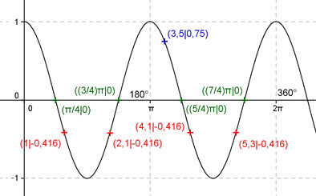

Aufgabe 138 Ergänzen Sie die Wertetabelle für x zwischen 0 und 2π: y = cos 2x x 3,5 1 oder 2,1 oder 4,1 oder 5,3 y 0,75 -0,416 Amplitude = 1 ; Periode = 2π/2 = π Berechnung der Nullstellen: cos 2x = 0 ---> Substitution 2x = u --> cos u = 0 --> u = π/2 + k * π mit k = 0, 1, 2, ... --> Rücksubstitution liefert 2x = π/2 + k * π |:2 --> x = π/4 + k * π/2 x1 liegt bei π/4 oder 45°, x2 bei (3/4)π oder 135° , x3 bei (5/4)π oder 225° oder x4 bei (7/4)π oder 315°.  Funktionswert an einer Stelle x ermitteln: 3,5 * 180° x = 3,5 oder ------------ = 200,5° π f(3,5) = cos (2 * 3,5) = cos (2 * 200,5°) = 0,75 gerundet. Berechnung der x-Werte für y = f(x) = -0,416: f(x) = -0,416 eingesetzt, existiert zweimal zwischen 0 und π bzw. 0° und 180° und zweimal zwischen π und 2π bzw. 180° und 360° (siehe Graph). cos 2x = -0,416 --> 2x = arc cos (-0,416) = 2 gerundet |:2 x = 1 --> 1 * 180° x1 = 1 oder ---------- = 57,3° π x2 = (π - 1) = 2,142 oder 122,7° x3 = (π + 1) = 4,142 oder 237,3° x4 = (2π - 1) = 5,283 0der 302,7° gerundet.